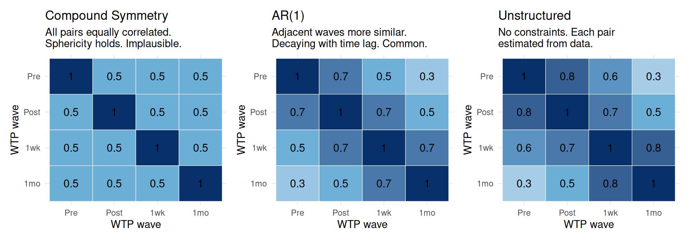

Code
# Visualize compound symmetry vs. a realistic AR(1) structure
library(Matrix)
# Compound symmetry: equal variances, equal covariances
CS <- matrix(c(1.0, 0.5, 0.5, 0.5,
0.5, 1.0, 0.5, 0.5,
0.5, 0.5, 1.0, 0.5,
0.5, 0.5, 0.5, 1.0), 4, 4)
# AR(1): closer time points are more correlated
rho <- 0.7
AR1 <- outer(1:4, 1:4, FUN = function(i, j) rho^abs(i - j))
# Unstructured: no constraints
US <- matrix(c(1.0, 0.8, 0.6, 0.3,
0.8, 1.0, 0.7, 0.5,
0.6, 0.7, 1.0, 0.8,
0.3, 0.5, 0.8, 1.0), 4, 4)
plot_cov <- function(M, title) {
as.data.frame(M) |>
rownames_to_column("row") |>
pivot_longer(-row, names_to = "col", values_to = "corr") |>
mutate(row = factor(row, levels = rev(unique(row))),
col = factor(col)) |>
ggplot(aes(x = col, y = row, fill = corr)) +
geom_tile(color = "white") +
geom_text(aes(label = round(corr, 1)), size = 4) +
scale_fill_gradient2(low = "#f7fbff", mid = "#6baed6", high = "#08306b",
midpoint = 0.5, limits = c(0, 1)) +
labs(title = title, x = "Time point", y = "Time point", fill = "Corr") +
theme_minimal(base_size = 12) +
theme(legend.position = "none")
}
library(patchwork)
plot_cov(CS, "Compound Symmetry\n(sphericity assumption)") +
plot_cov(AR1, "AR(1)\n(more realistic)") +
plot_cov(US, "Unstructured\n(no constraints)")